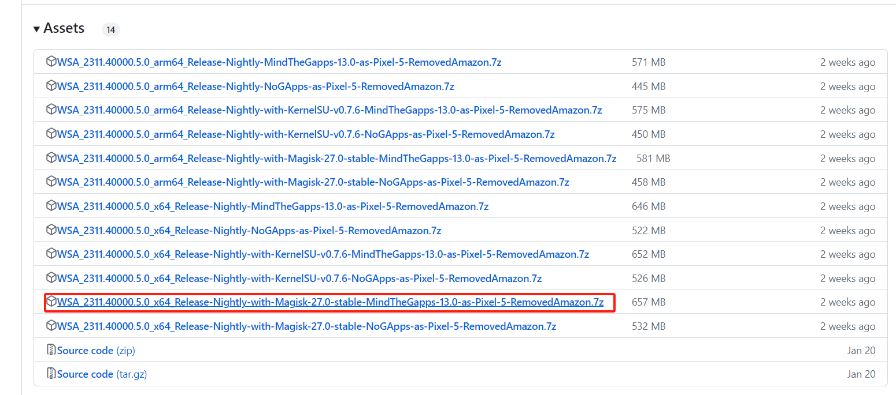
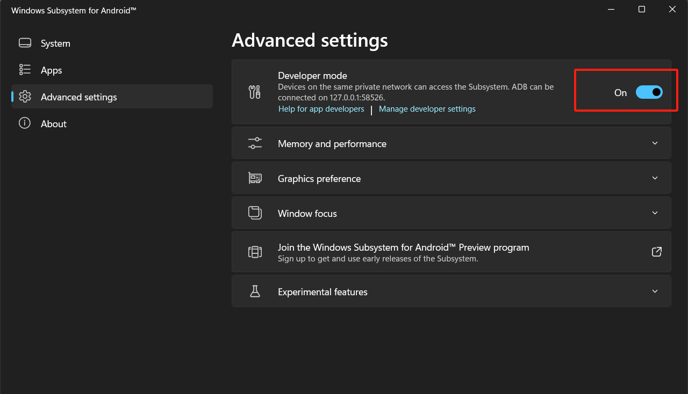
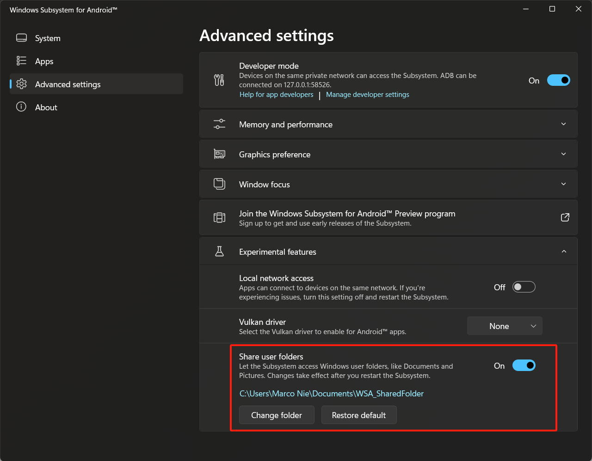
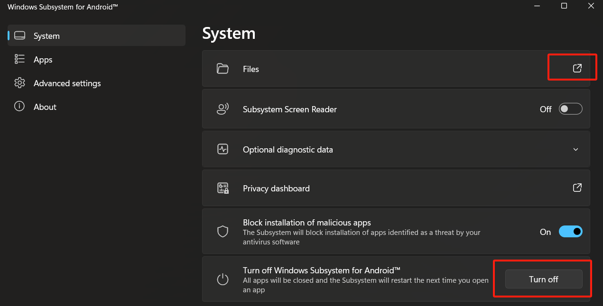
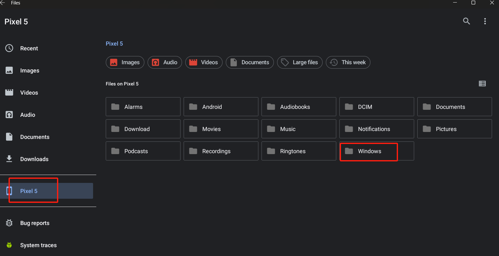
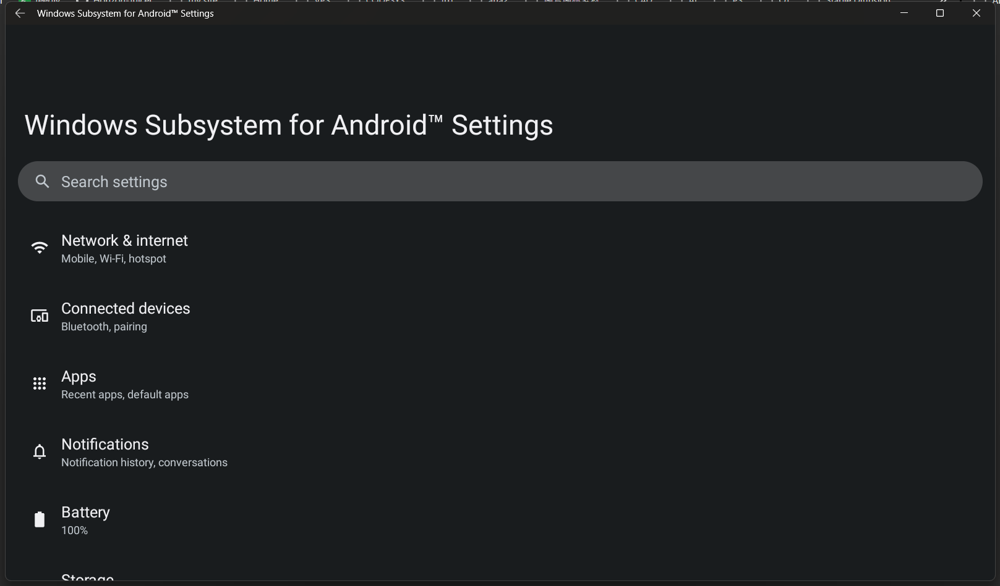

WSA (Windows Subsystem for Android) 的安装及使用
之前介绍过 Windows10 安装 wsl 的教程，可以方便的在 Windows 下使用 Ubuntu 系统。今天介绍安装 wsa 用来在 Windows 下使用 Android 系统及安装第三方 apk。
安装
wsa 没有在官方的 store 中提供，这里使用开源的 WSA-Script 很方便的一键安装。
GitHub 主页：https://github.com/YT-Advanced/WSA-Script
在 release 页面下载最新打包的版本：https://github.com/YT-Advanced/WSA-Script/releases/latest
我需要使用 google play 框架及 root 权限，所以下载的是框出来的版本：

下载好解压到一个特定的目录，运行 Run.bat，期间会提示需要管理员权限以及提示收集信息的对话框，点击确认即可。
安装完成后会自动运行 Windows Subsystem For Android™ 应用。
设置代理
如果需要使用 play 商店，就需要配置代理服务。如果本机有代理工具的话，可以让 wsa 直接调用本机代理。这里需要使用 adb 工具，下载链接：https://dl.google.com/android/repository/platform-tools-latest-windows.zip
解压压缩包，可以看到其中有一个 adb.exe，可以将目录添加到系统 path 以方便在 terminal 调用。
首先需要设置 wsa 打开开发者模式，进入设置打开选项：

默认 wsa 是运行在本地的 58526 端口的。
建立一个 powershell 脚本，如：wsaproxy.ps1，内容如下：
$WinNetIP=$(Get-NetIPAddress -InterfaceAlias 'vEthernet (WSLCore)' -AddressFamily IPV4) # get android network gateway addr
adb connect 127.0.0.1:58526 # android port
adb shell settings put global http_proxy "$($WinNetIP.IPAddress):1082" # local proxy port第一次执行会弹出对话框是否信任外部访问，点击允许即可。
以上脚本会获取到 wsa 所在网卡的网关地址，然后用 adb 连接到 wsa，最后配置代理，注意脚本里的本地代理端口修改为实际值即可。
运行脚本即可让 wsa 配置好代理服务。以后只需要执行这个脚本就可以自动设置代理。
如果需要取消代理运行下面命令即可：
adb shell settings put global http_proxy :0安装 apk
推荐直接在 play 商店安装应用程序，如果需要安装自己下载的第三方 apk，直接使用 adb 工具即可。
安装命令：
adb connect 127.0.0.1:58526
adb install xxx.apk文件共享
可以配置一个 Windows 主机的路径作为同 wsa 共享目录，这样两边就可以互传文件了。
打开 Windows Subsystem For Android™ 进入 advanced settings - experimental feature，启用 share user folders 功能并选择一个本地目录作为共享目录：

通过 system - turnoff 关闭 wsa，然后点击 files 会重新运行 wsa：

可以看到有一个 windows 文件夹：

这个文件夹就是对应的 windows 共享目录。
系统设置
默认情况下只有在第一次安装成功后会自动启动 Android 设置界面，并且找不到设置的启动图标在哪里，我们可以在浏览器里直接访问 android settings 地址的方式启动。
浏览器中输入以下地址并访问：wsa://com.android.settings，会提示是否需要跳转到设置，点击确认即可进入设置：

参考链接
Windows Android 子系统 WSA 代理设置方法教程
WSA (Windows Subsystem for Android) 使用 Windows 上的代理
标签：无